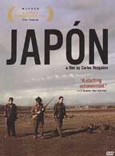

| |
So, 24. September 2006 - KIZ
Japón (Mex 2002)

Die Hommage an "Eureka" aus Mexiko - Tarkowski lebt. Um einiges kürzer, dafür umso rätselhafter. Ein Maler steigt in einen Canyon, um Selbstmord zu begehen, und quartiert sich bei einer alten Frau ein.
Ein namenloser Mann hinkt durch das mexikanische Hochland, auf einer Reise, die seine letzte sein soll. Er hasst sich und hat genug vom Leben. Er sucht die Einsamkeit der Berge, um sich auf den Tod vorzubereiten. In einem kleinen Dorf findet er Unterschlupf bei Ascen, einer alten Witwe, die etwas abseits in einer Steinhütte lebt. Ihr Neffe jedoch will sie aus der Hütte vertreiben. Vorsichtig entwickelt sich zwischen dem Mann und Ascen eine Beziehung. Gleichzeitig kämpft er jedoch mit seinem Drang nach Selbstzerstörung und seinen Gefühlen für Ascen und dem Wunsch, ihr zu helfen.
"The one thing that is clear from Japón is that a major new visual stylist has hit the screen and that Reygadas' first film represents the beginning of an auspicious career." -- Marjorie Baumgarten, AUSTIN CHRONICLE
"If you're in synch with its heartbeat, and with Reygadas' tendency to pursue visual detours that intensify the film's sensual impact, this is a remarkable first effort that is equal parts disturbing, bold, mysterious and primal." -- Jeff Shannon, SEATTLE TIMES
"Unfolding at an elliptical pace that feels like a revelation, or tedium, or both, Japon recalls the glory days of 1970s art-house filmmaking." -- Ty Burr, BOSTON GLOBE
"Reygadas has fashioned a slow-burning meditation on life and death, faith and rebirth." -- Tom Dawson, BBC
Festivalpreise:
15 Preise und 8 Nominierungen
Cannes 2002 - Goldene Kamera
Mex 2002, B+R: Carlos Reygadas, D: Alejandro Ferretis. 130min, spa.mdUT
Sonntagsmatineé 12:00 Uhr, KIZ im Augarten Graz
- [imdb]
- [rottentomatoes] 100% FRESH, 8.1/10